Lab 1: Feedback and Discussion
Notes from me and the TAs
Get into groups of 2-4
- No more than 4!
- Introduce yourself if you do not know each other
- Share you html documents with each other (email, airdrop, etc.)
Introduce Research Question
- Share your research question with each other!
- Share your other variables
- Is everyone using the appropriate variables?
- Did anyone see any potential issues with how many individuals are in each category of a variable?
Double check code and saved data
- Did everyone in the group successfully save the dataset?
- Can you open it right now?
- Did everyone include all the race variables?
- Any other issues with variables??
Compiled introductions
- What major points did you include in your introduction?
- Would you change anything after discussing with your group?
More discussion for 1/25
File Management
From Lesson 1: Folder organization
Make a folder for our class!
- I suggest naming it something like
BSTA_512_W27to indicate the class and the term
- I suggest naming it something like
Make these folders in your computer (or in OneDrive if you prefer)
- Only make them in OneDrive if you have a desktop connection
For a project, I have the following folders
- Background
- Code
- Data_Raw
- Data_Processed
- Dissemination
- Reports
- Meetings
For our class, I suggest making one folder for the course with the following folders in it:
- Data
- Homework
- Project (with above subfolders)
- Lessons
- And other folders if you want
From Lesson 1: Creating project in RStudio
Way to designate a working directory: basically your home base when working in R
We have to tell R exactly where we are in our folders and where to find other things
A project makes it easier to tell R where we are
Basic steps to create a project
Go into RStudio
Create new project for this class (under
Fileor top right corner)- I would chose “Existing Directory” since we have already set up our folders
- Make the new project in the
BSTA_512_W27folder
Once we have projects, we can open one and R will automatically know that its location is the start of our working directory
Only make one project for now!!
From Lesson 1: Using here package
Within your console, type
here()and enter- Try this with
getwd()as well
- Try this with
library(here)
here()[1] "/Users/wakim/Library/CloudStorage/OneDrive-OregonHealth&ScienceUniversity/Teaching/Classes/BSTA_512_27W/BSTA_512_27W_site"getwd()[1] "/Users/wakim/Library/CloudStorage/OneDrive-OregonHealth&ScienceUniversity/Teaching/Classes/BSTA_512_27W/BSTA_512_27W_site"
herecan be used whenever we need to access a file path in R code- Importing data
- Saving output
- Accessing files
Multi-selection/multi-response variables
Multi-response/multi-selection variables like our race/ethnicity variables
There is extra data management skills that we need to address these
Let’s walk through categorical variables that have multiple selections
4 Approaches to Multiple-Race Questions from We All Count
- This method works for any multi-level variable
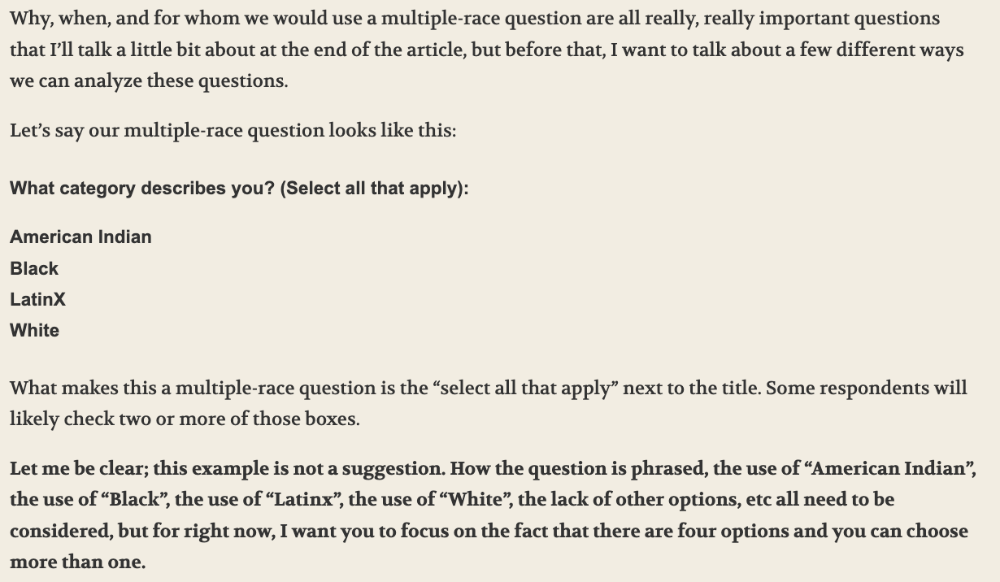
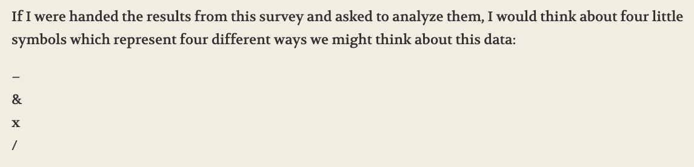
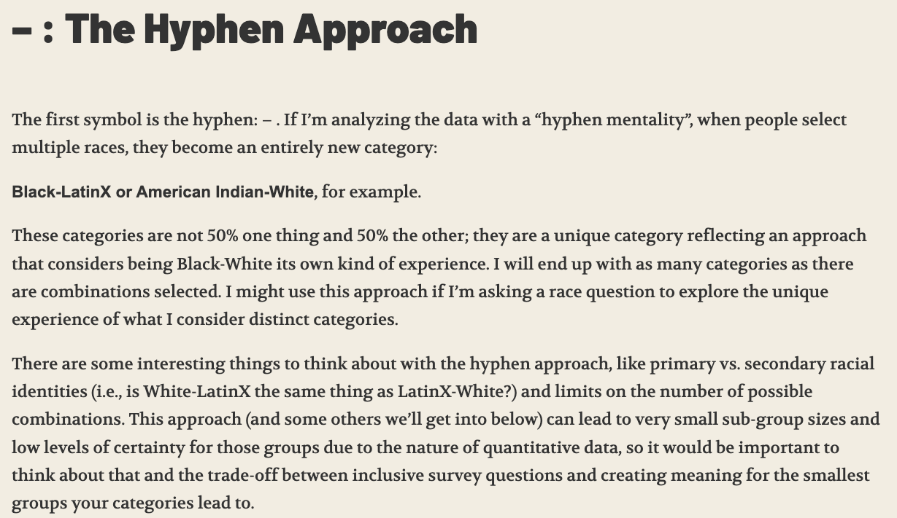
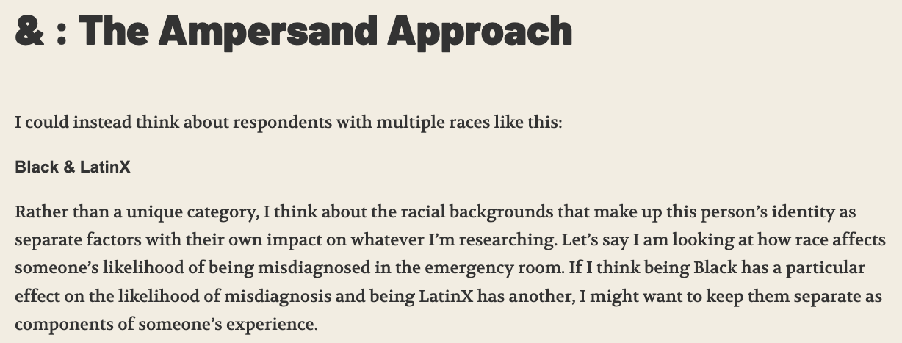
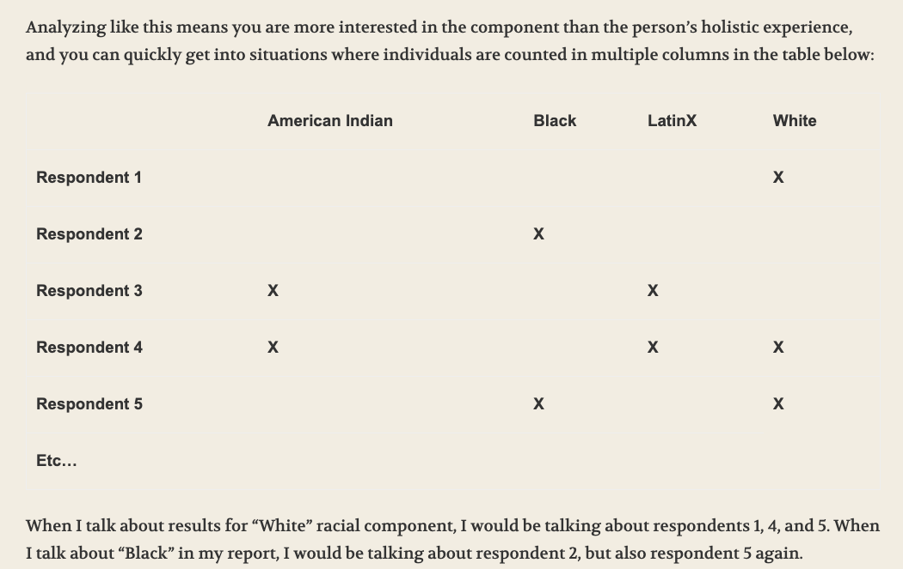
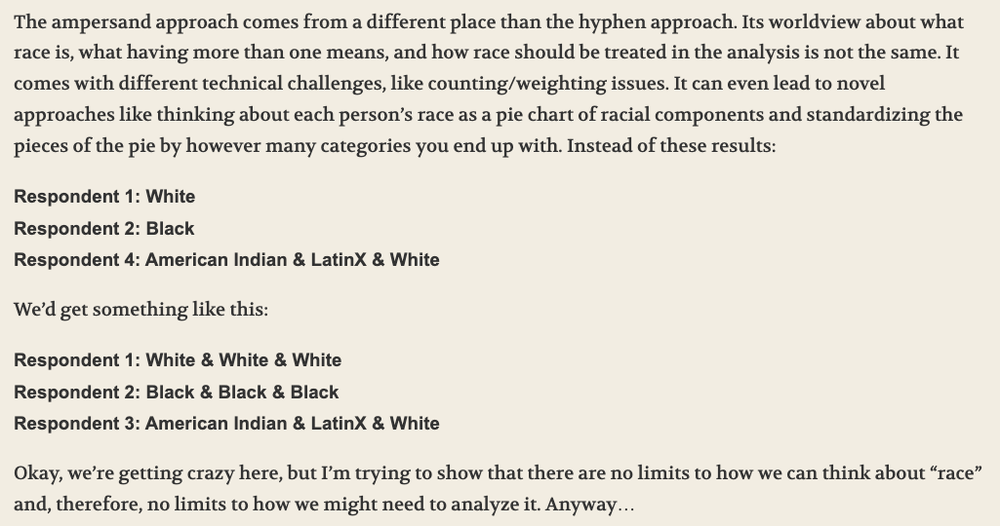
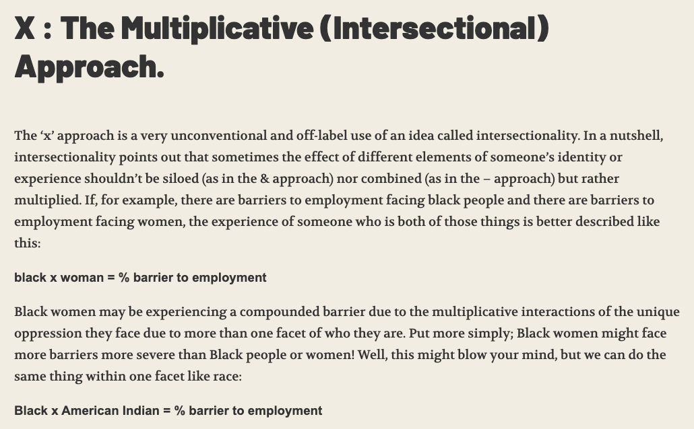
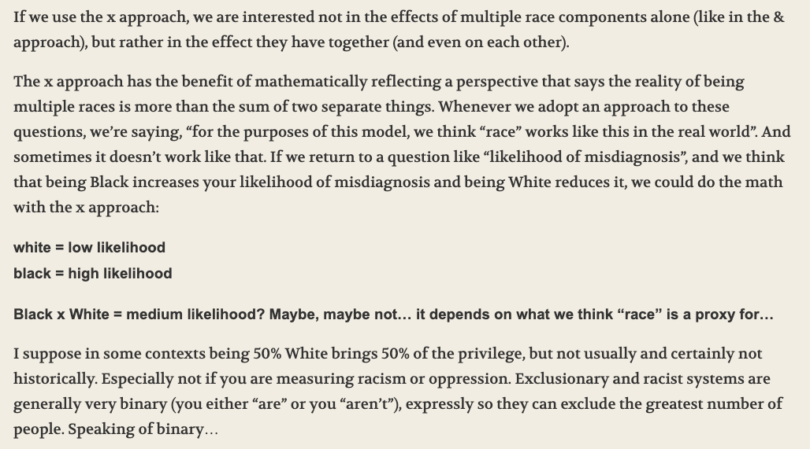
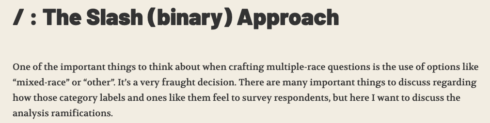
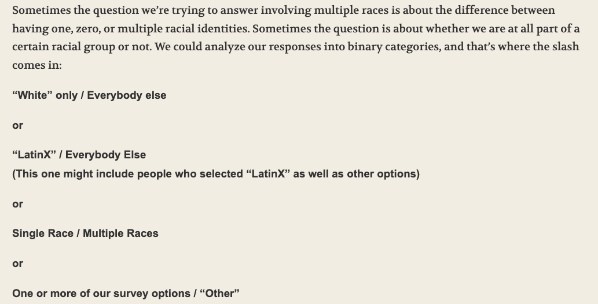
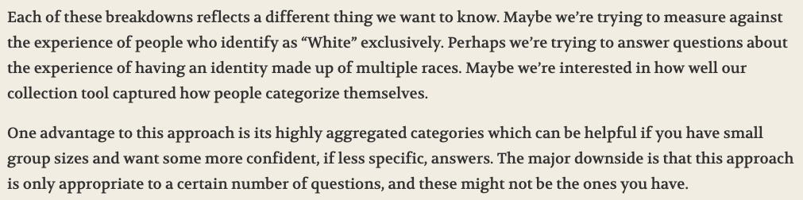
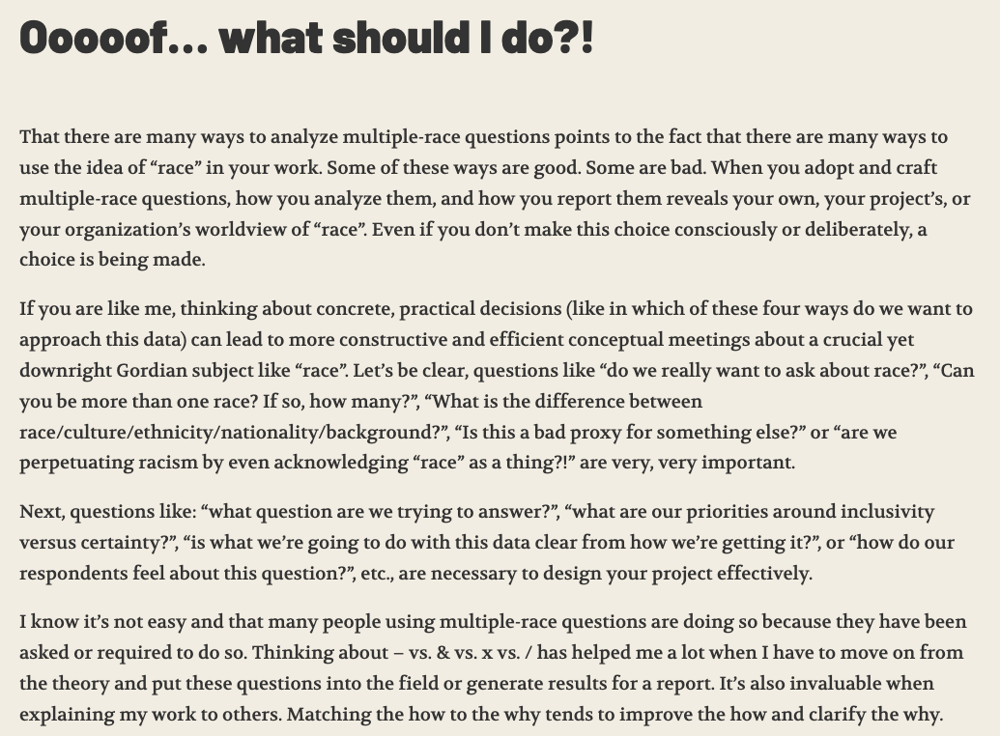
Final notes
- For now, I suggest the binary approach!
- This is the perfect level of pushing ourselves coding wise and thinking critically about these multi-response variables
- This is what the dataset gives you!!
- Take a look at this article: https://doi.org/10.1016/j.socscimed.2017.12.026
- It gets into some of the considerations and uses of intersectionality in analyses
For our 8 variables on race/ethnicity
- Make sure you understand what the indicators mean
- Each variable is a 0/1 indicator for whether the individual selected that race/ethnicity
- 0 indicates that they do not identify as that race/ethnicity
- 1 indicates that they do identify at that race/ethnicity
- When we go to interpret the coefficient for a specific indicator variable, we will interpret it as the mean difference in IAT score between those who identify as that race/ethnicity and those who do not
- For example, a coefficient for
re_blackindicates the mean difference in IAT score between those who identify as Black or African American and those who do not identify as Black or African American
- An individual can select more than one race/ethnicity
- Each variable is a 0/1 indicator for whether the individual selected that race/ethnicity
- In Lab 1: Filtering out individuals with missing information on their race/ethnicity
- I had one way of doing this, but I asked ChatGPT how to do this
- Here is what ChatGPT said